本部の担当者と、写真を送る職員・消防団員向け
新しく始めると、前の災害は「終了」になります。前の写真と記録は残ります。合言葉・投稿用リンク・QRは新しくなります。
練習では「訓練」を選びます。同じ災害なら「同じ災害で受付を再開」を選びます。
LINEで送ってもかまいません。QRを配るときは「QRの画像を保存」を使います。「合言葉入り（外すと合言葉なし）」を外すと、合言葉を含まない掲示用のQRになります。
合言葉入りのリンク・QRは、職員・消防団の外に出さないでください。合言葉を変えた後は配り直します。管理画面のパスワードは投稿する人に配りません。
同じ場所の写真は20枚までまとめて送れます。すでに撮った写真は「🖼 写真を選ぶ」で追加します。位置が違う場合は、地図でピンを動かしてください。精度が悪いという案内が出た場合も地図で直します。危険な場所へ近づかず、安全な場所から使ってください。
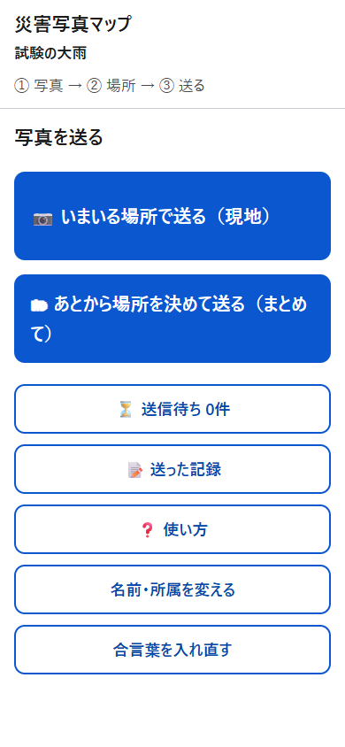
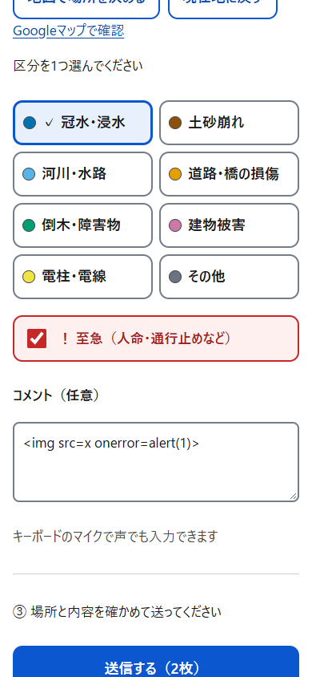
「📍 写真の位置情報」と出る写真には、写真に残っていた場所が自動で入ります。同じ場所なら「前の写真と同じ場所」を使えます。どうしても分からない場合は「場所が分からない」を押し、確認画面で「OK」を押します。本部に場所を確認してもらってください。
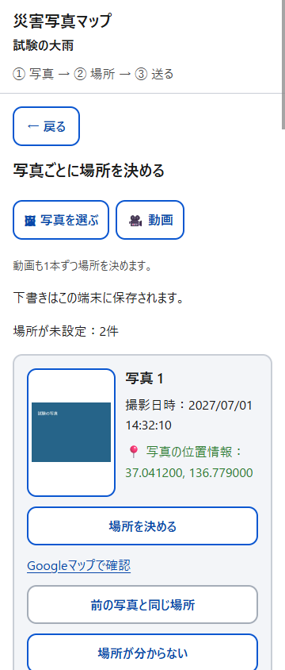
カードの写真を押すと、画面いっぱいに大きく表示します。写真をもう一度押すか「閉じる」でカードに戻れます。座標は、場所を表す2つの数字です。
数字をコピーできないときは、Googleマップの「共有」から「リンクをコピー」を選び、同じ欄に貼れます。iPhoneで写真の位置情報を残すには、写真を選ぶ画面の「オプション」で「位置情報」をオンにします。機種と版によって画面が異なります。
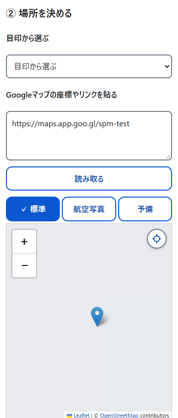
送信待ちが残っている間は、ブラウザの履歴やサイトのデータを消さないでください。受付停止中や合言葉が変わった場合は、本部に確認してください。予備の窓口が表示される場合は、そのリンクからも送れます。
写真を選んだ後にページが読み直されても、「前の続きがあります」から下書きを戻せます。LINEで開いた場合は「ブラウザで開き直す」を押します。ホーム画面に追加した場合は、合言葉の入れ直しが必要なことがあります。困ったときの連絡先は災害対策本部です。
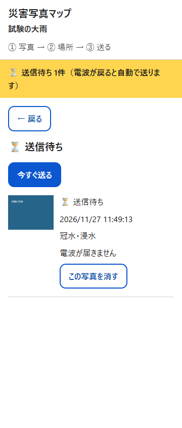
30秒くらいがおすすめです。初期の上限は1本100MBで、管理担当者が設定できます。写真と動画を同じ投稿に入れられます。現地では選んだときの現在地が付きます。動画は大きいと時間がかかります。Wi-Fiのある所でまとめて送ってもかまいません。途中で電波が切れると送信待ちに残り、つながると続きから送ります。端末の空きが足りない場合は、短く撮り直してください。
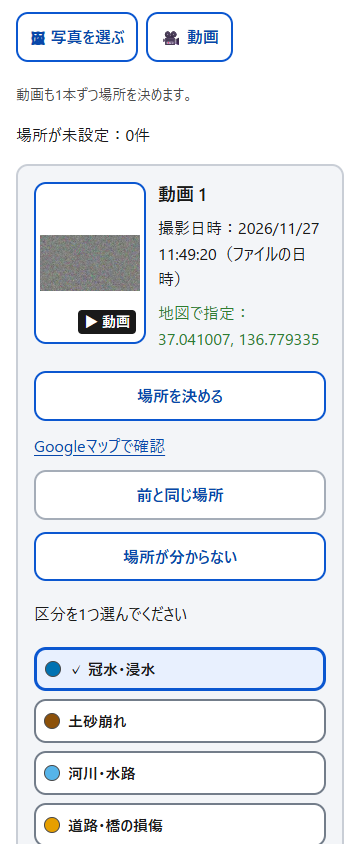
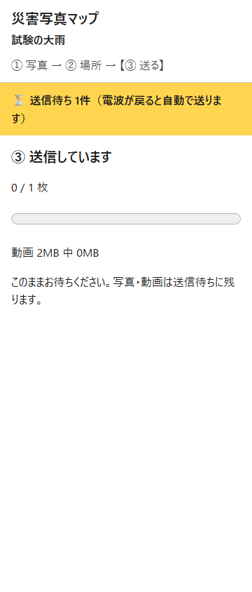
「タイル」は写真1枚ずつ、「一覧」は投稿1件ずつ見られます。「絞り込み」で区分・状況・至急・期間・文字を絞れます。地図の「位置なし」から、場所が分からない投稿を選んで地図に置けます。間違った投稿は「非表示にする」で隠せます。記録と写真は残ります。
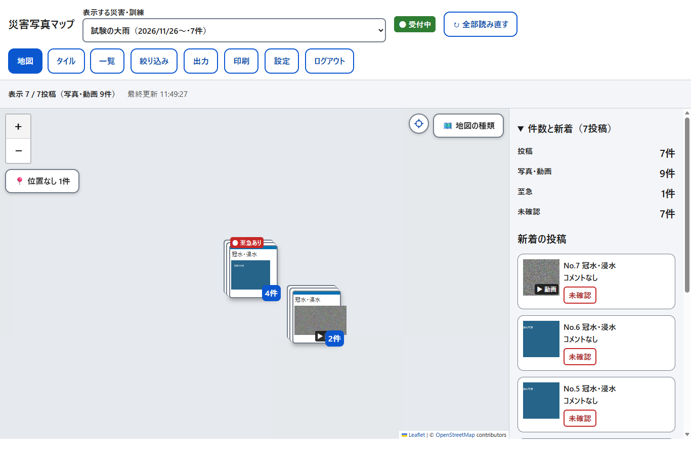
「一覧」では最初は「件数と新着」が畳まれています。「件数と新着」の見出しを押すと開閉できます。「タイル」でも同じ操作で畳めます。一覧の左端のチェックボックスで投稿を選べます。
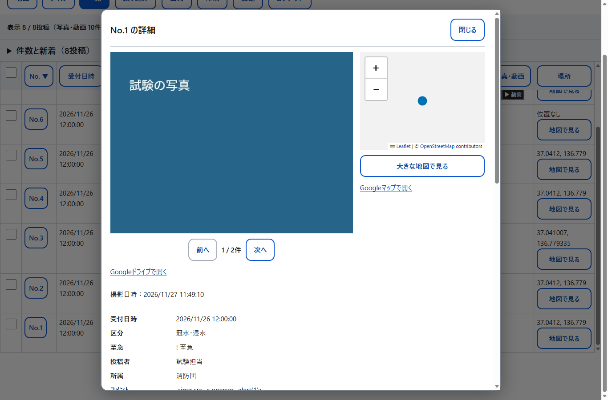
詳細には写真・動画と、その場所の小さな地図が出ます。「大きな地図で見る」で付箋の場所へ移動し、「Googleマップで開く」で現地の場所を確認できます。位置なしの投稿は「地図を押して置く」で場所を指定します。
動画の付箋・タイル・一覧・新着には「▶」と長さが出ます。詳細を開くと少しずつ読み込み、進み具合を表示します。読み込みが終わったら動画の再生ボタンを押します。再生できない場合や読み込み中は「Googleドライブで開く」も使えます（保存先のドライブに入れる方が対象です）。
いたずらの一時的な隠しは「非表示」、本当に要らないものは「削除」を使います。「非表示」は写真・動画と記録が残り、「非表示を含める」で探して「表示に戻す」で戻せます。
記録の行は消えます。写真・動画のファイルはGoogleドライブのゴミ箱へ移します。30日以内ならドライブのゴミ箱からファイルを戻せますが、消えた記録の行や管理画面の投稿は戻りません。
削除したものは地図・タイル・一覧・新着・件数から消えます。詳細で1件だけ削除して残りがあるときは次の1件を表示し、投稿全体がなくなったら詳細を閉じます。同じ災害を開いている別の管理画面にも自動更新で反映されます。
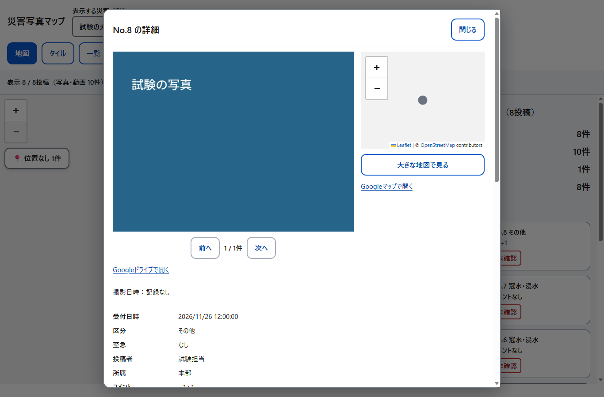
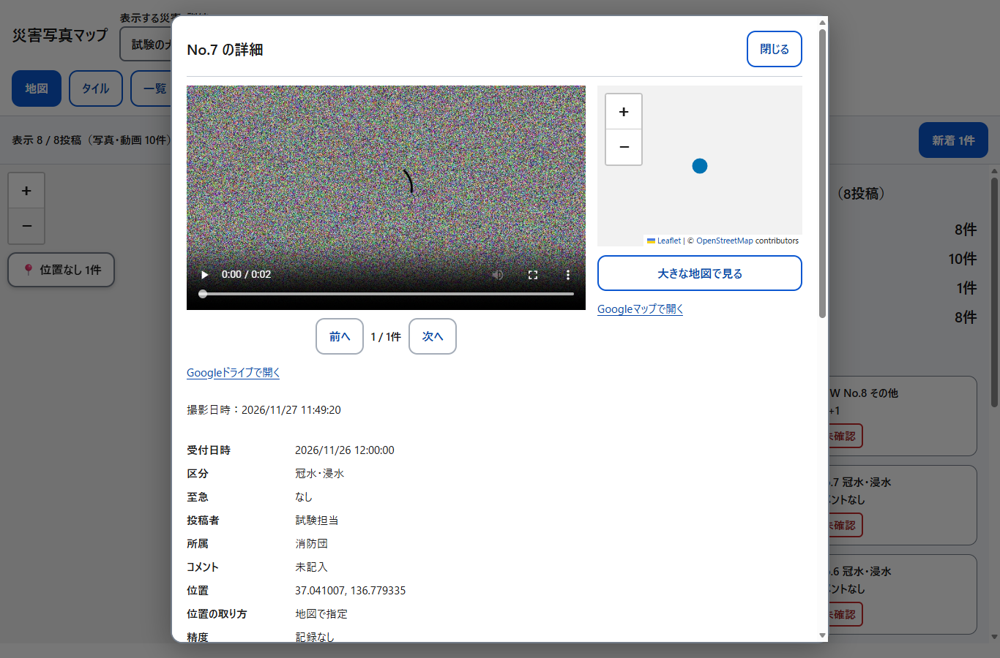
CSV・GeoJSON・KMLには「種類」「長さ(秒)」が含まれます。ZIPは初めは写真だけを保存します。動画も必要な場合は出力の「動画も入れる（時間がかかります）」を選んでからZIPを保存してください。印刷では動画のサムネイルに「▶ 動画（0:24）」のように長さを載せます。
「CSV（Excel用）」「GeoJSON（地図ソフト用）」「KML（Googleマイマップ・Google Earth用）」「写真をまとめて保存（ZIP）」を選べます。GeoJSONとKMLは位置がある投稿だけです。一覧でチェックした投稿があれば、その投稿だけが対象です。
印刷用一覧はA4縦で1ページに2投稿です。場所のQRをスマホで読むとGoogleマップが開きます。印刷画面を閉じた後は「戻る」で管理画面に戻れます。
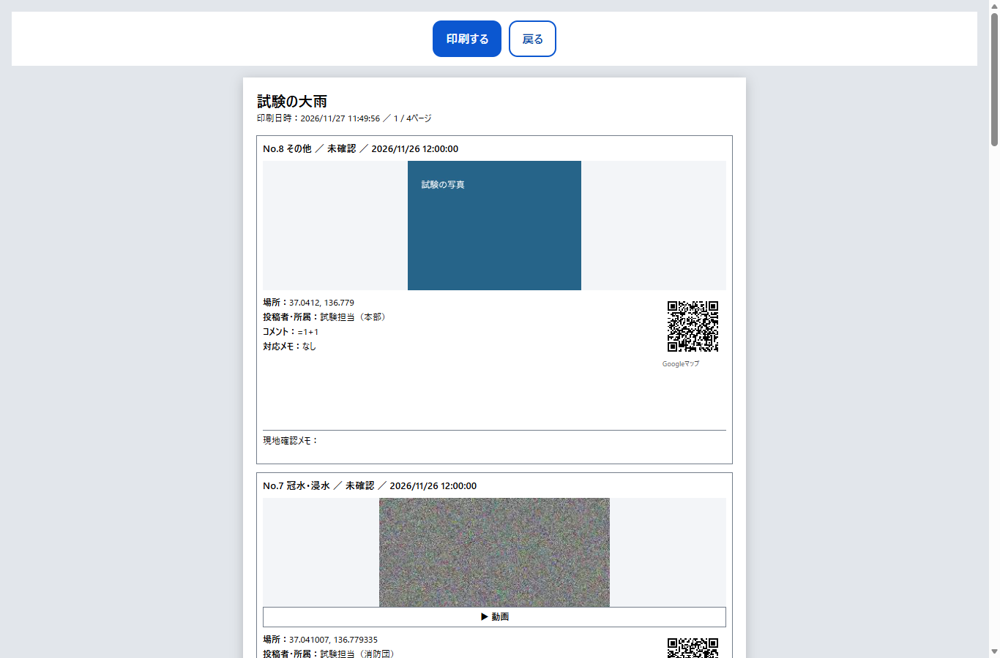
スプレッドシートから止める場合は「災害写真マップ」の「③受付を止める」を使います。メニューで変えた状態は管理画面に60秒以内を目安に反映されます。すぐ反映するには「↻ 全部読み直す」を押してください。
ふだんは投稿の受付停止だけで足ります。写真の保存期間・出力したファイルの扱いは町の決まりに従ってください。
地図・タイル・一覧・出力・印刷は、選んだ災害の分になります。新しい投稿は受付中の災害に入ります。外で受付中の災害が変わっても、いま見ている災害は勝手に切り替わりません。
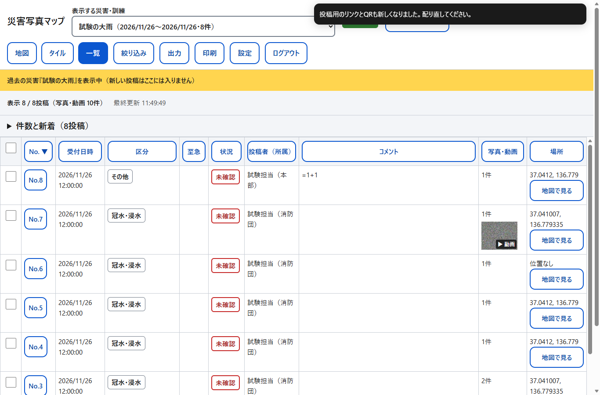